TCC · Inspeção de garrafas · descritores classificados separadamente
Do pixel aos vetores
Cada etapa, com "prints" reais de uma imagem da base: a garrafa é achada só pela subtração do fundo, e HOG, LBP e cor viram vetores separados, testados em cada classificador
Imagem de exemplo: loose_cap_0001_20260210_152014.jpg (validação, classe defect_loose_cap)
Visão geral
Menos escolhas feitas à mão
Detecção da garrafa
Só subtração de fundo: limiar de Otsu; a posição e a altura da garrafa são medidas na máscara. Só a largura da caixa é um valor fixo, escolhido à mão
Regiões: duas opções
ROIs ad hoc (tampa, rótulo, corpo), relativas à caixa detectada; ou regiões automáticas, aprendidas das garrafas de treino
Descritores
HOG, LBP e cor HSV, sem medidas ad hoc de cor ou forma do produto
O que é classificado
Nunca uma ROI sozinha: o vetor das ROIs juntas, o das regiões automáticas ou o da garrafa inteira; sem localização, também uma área ampla fixa e a imagem inteira, sem localização. 15 vetores × 3 classificadores = 45 modelos
O caminho
Dez passos, da foto à matriz comparativa
Passos 1–8 rodam para cada imagem (prepare_image + extract_features); o 9 monta cada vetor (build_matrix); o 10 treina e avalia (pipeline.run)
Passo 1 · read_image()
A foto é uma matriz de números

OpenCV lê em BGR (não RGB). Ex.: o pixel (x=640, y=120), na tampa, vale [B 189, G 110, R 59]
Passo 2 · build_background() — feito uma vez
O fundo: mediana de 200 fotos
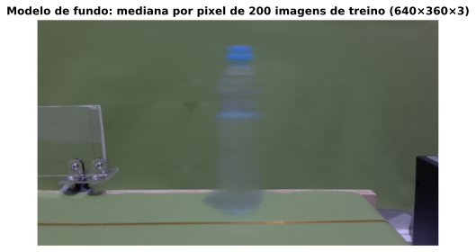
- Sorteia 200 fotos de treino (semente 42) e reduz cada uma para 640×360
- Para cada posição, a mediana dos 200 valores → matriz
360×640×3 - O cenário fica nítido; a garrafa deixa só um "fantasma" borrado
- É salvo junto com cada modelo em
model.joblib
Passo 3a · reference_patch_mean()
Medir a luz num pedaço fixo da parede

Patch = pixels x 1024–1241, y 14–180. Médias B,G,R: fundo (80,1; 95,9; 88,2), foto (79,1; 96,3; 89,0) → ganho = fundo ÷ foto = (1,013; 0,996; 0,991)
Passo 3b · normalize_lighting()
Multiplicar a foto inteira pelo ganho

Ex.: o pixel da tampa [189, 110, 59] vira [191, 109, 58]. Se a luz caísse 10%, os ganhos seriam ≈1,11 e tudo voltaria ao normal
Passo 4 · background_difference() + otsu_threshold()
Diferença para o fundo e limiar automático
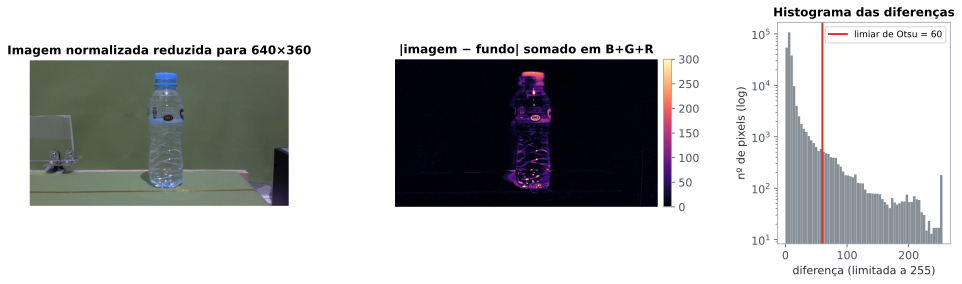
O limiar não é fixo: o método de Otsu escolhe, para cada foto, o valor que melhor separa os pixels em dois grupos (fundo e garrafa). Nesta foto: 60
Passo 5 · foreground_mask()
Máscara: limiar, fechamento e abertura
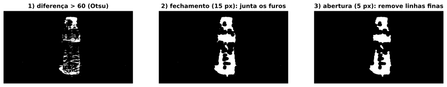
A garrafa é transparente, então a máscara bruta é "rendada" (2,7% dos pixels). O fechamento (15 px) junta os pedaços; a abertura (5 px) apaga linhas finas e pontos soltos, como a borda da mesa quando a cena se desloca 1 px
Passo 6 · locate_bottle()
A caixa da garrafa, medida na máscara
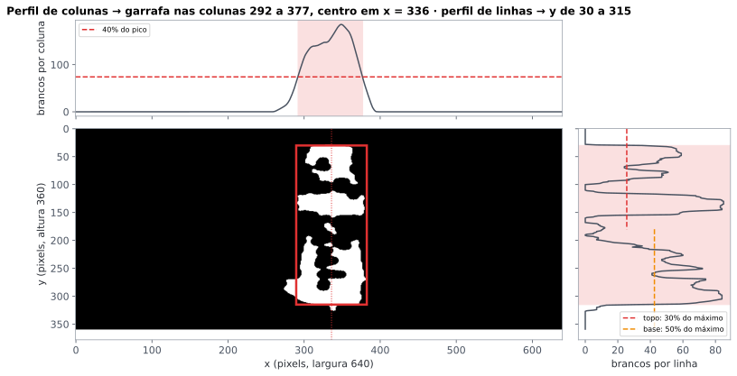
Colunas: o perfil de brancos por coluna (média móvel de 31 colunas) acha a garrafa no trecho em torno do pico acima de 40% dele (x 292–377); o centro é o meio desse trecho (x = 336) e a caixa tem largura fixa de 14,5% da imagem → x 290–382. Linhas: dentro dessas colunas, o topo é a primeira linha acima de 30% da mais cheia e a base, a última acima de 50% → y 30–315. A posição e a altura são medidas; só a largura é informada
Passo 6 · validação com as caixas anotadas da base (1500 imagens)
A caixa detectada, conferida com as caixas anotadas

| detecção automática | |
|---|---|
| erro médio do centro | 4,0 px |
| erro do centro, p95 | 14,0 px |
| IoU médio com a anotação | 0,94 |
| IoU, 5% piores | 0,85 |
| erro p95 das bordas | 1,1% a 2,5% da imagem |
As caixas anotadas são usadas só para conferir; o pipeline nunca as lê. A caixa acompanha garrafas mais altas (tampa solta) e mais baixas (sem tampa). Pior caso em 1500: IoU 0,64. Comparados três modos de tirar a caixa da mesma máscara (treino): tudo pelos limiares, IoU 0,92; largura e altura fixas, 0,92; largura fixa com centro e altura medidos, 0,94.
Passo 7a · crop_regions() — opção 1
ROIs ad hoc, relativas à caixa detectada

Faixas dentro da caixa (0 = topo, 1 = base): cap 0–0,12 · label 0,20–0,52 · body 0,12–1,00. São as únicas posições escolhidas à mão. A região bottle é a própria caixa (185×570 px nesta foto)
Passo 7b · regions.learn_auto_bands() — opção 2
Regiões automáticas, aprendidas do treino
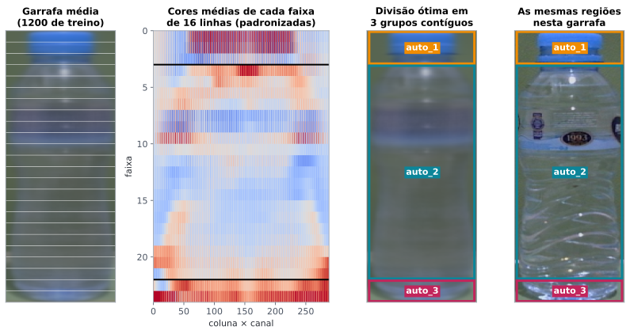
1) média das 1200 garrafas de treino (96×384) · 2) cores médias de cada faixa de 16 linhas · 3) divisão em 3 grupos contíguos com faixas o mais parecidas possível (ótimo exato por programação dinâmica). Só o número de regiões é informado. Resultado: auto_1 0–0,125 (tampa) · auto_2 0,125–0,917 · auto_3 0,917–1 (base)
Passo 7 · as duas opções nas 7 classes
ROIs ad hoc × regiões automáticas
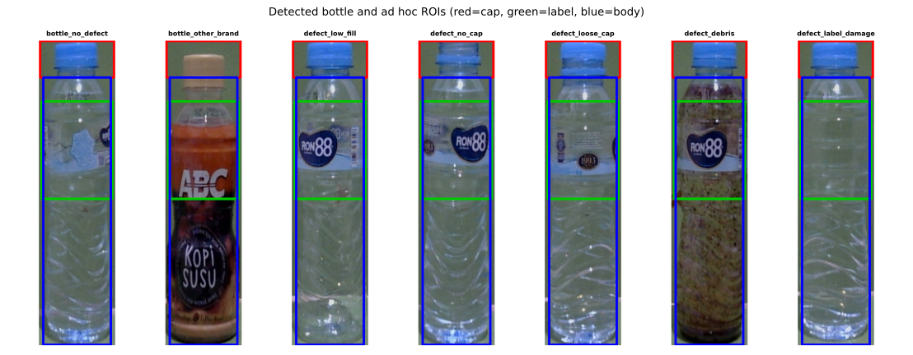
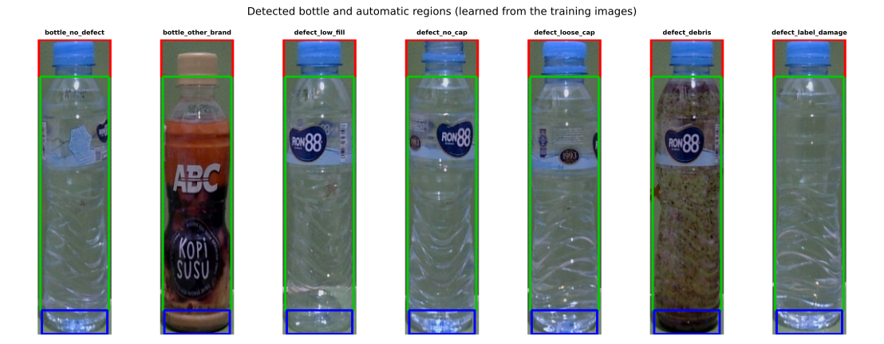
Acima: ROIs ad hoc (o corpo sobrepõe o rótulo). Abaixo: regiões automáticas (não se sobrepõem e cobrem a garrafa inteira). Como a caixa é detectada, as faixas acompanham a altura de cada garrafa
Passo 7 · sem localização
E sem achar a garrafa? Área ampla e imagem inteira

Dois escopos sem caixa nem ROI: a área ampla (wide) é um retângulo fixo da foto, x de 0,20 a 0,78 e y de 0,02 a 0,97, com a largura de 3 a 4 garrafas e que contém todas as garrafas da base; a imagem inteira (image) é a foto toda. As duas são reduzidas na mesma escala (256×240 e 448×256), então a garrafa tem o mesmo tamanho nas duas e só muda a quantidade de fundo
Passo 8a · preparação para HOG e LBP
Tamanho fixo e tons de cinza
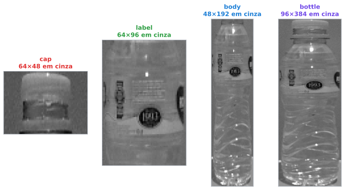
- Cada região é redimensionada: cap 64×48 · label 64×96 · body 48×192 · bottle 96×384
- As regiões automáticas são fatias da garrafa 96×384: 96×48, 96×304 e 96×32
- Convertida para cinza: HOG e LBP não usam cor
- A cor é calculada à parte, no recorte colorido
Passo 8b · HOG — uma célula
HOG: para onde apontam as bordas?
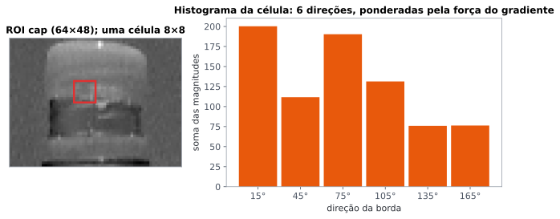
Cada um dos 64 pixels da célula vota na sua direção (6 caixas de 30°) com peso = força do gradiente. São 6 números por célula
Passo 8c · hog_features()
HOG: células → blocos → vetor por região
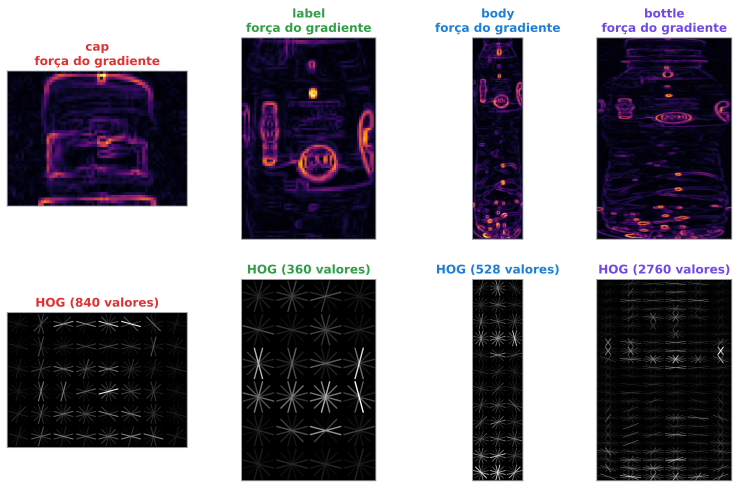
| região | células | blocos 2×2 | valores |
|---|---|---|---|
| cap | 8×6 | 35 | 840 |
| label | 4×6 | 15 | 360 |
| body | 3×12 | 22 | 528 |
| auto_1 · auto_2 · auto_3 | 6×3 · 6×19 · 6×2 | 10 · 90 · 5 | 240 · 2160 · 120 |
| bottle | 6×24 | 115 | 2760 |
Um bloco junta 2×2 células vizinhas (4 × 6 = 24 números) e é normalizado (L2-Hys). Células de 16×16 px (8×8 na tampa).
Passo 8d · LBP — um pixel
LBP: os vizinhos são mais claros ou escuros?
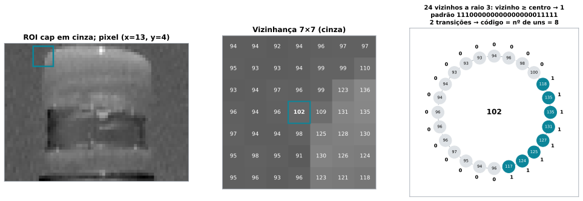
24 vizinhos num círculo de raio 3 (valores interpolados entre os pixels). Vizinho ≥ centro → 1. Padrão uniforme (até 2 trocas 0↔1 no círculo): código = nº de uns (0 a 24); os demais recebem o código 25. Aqui: 111000000000000000011111 → 8 uns → código 8 (uma borda)
Passo 8e · lbp_features()
LBP: um histograma de códigos por célula
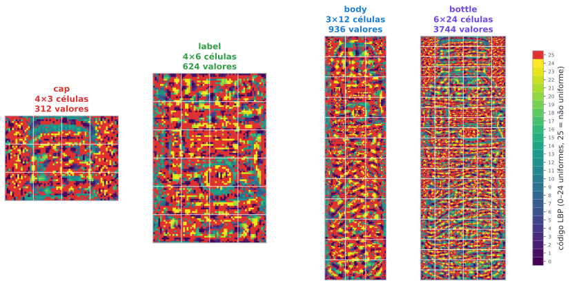
| região | células 16×16 | × 26 códigos |
|---|---|---|
| cap | 12 | 312 |
| label | 24 | 624 |
| body | 36 | 936 |
| auto_1 · auto_2 · auto_3 | 18 · 114 · 12 | 468 · 2964 · 312 |
| bottle | 144 | 3744 |
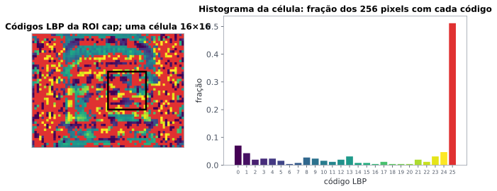
Em cada célula, a fração de pixels com cada código (26 números). Um histograma por célula preserva onde está cada textura.
Passo 8f · hsv_color_features()
Cor: 74 números por região
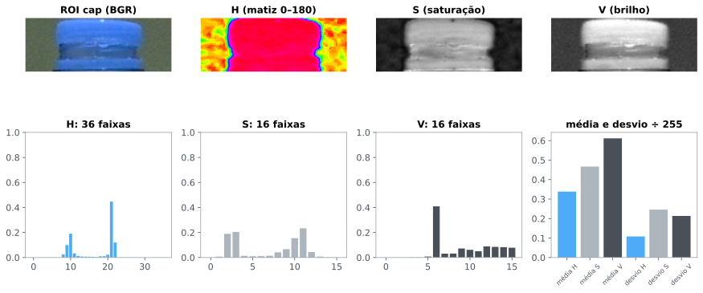
BGR → HSV · histograma de H (36), S (16) e V (16), cada um somando 1 · + média e desvio de H, S, V ÷ 255 · 36+16+16+3+3 = 74. Nenhuma faixa de cor é escolhida à mão: o histograma cobre todos os matizes
Passo 8 · extract_features()
Uma foto → 27 grupos de atributos
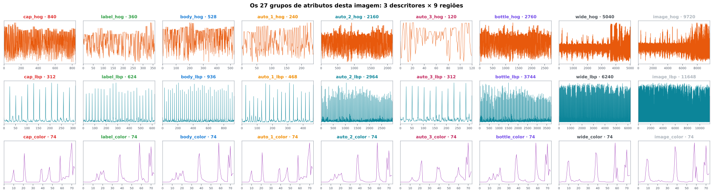
3 descritores × 9 regiões (3 ROIs ad hoc, 3 automáticas, garrafa inteira, área ampla, imagem inteira) = 27 grupos, chamados <região>_<descritor>. Conferido: os grupos desta foto são idênticos, número por número, aos usados no treino
Passo 9 · FEATURE_VECTORS + build_matrix()
15 vetores, um descritor em cada
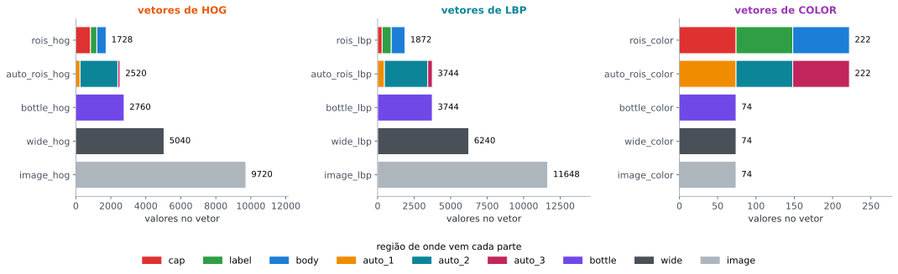
Para cada descritor, 5 escopos: as três ROIs ad hoc concatenadas (rois_*), as três regiões automáticas (auto_rois_*), a garrafa inteira, sem região (bottle_*), e, sem localização, a área ampla (wide_*) e a imagem inteira (image_*). Nenhuma ROI é classificada sozinha, e HOG, LBP e cor nunca entram no mesmo vetor
Passo 9 · build_matrix()
Uma matriz X para cada vetor

Cada linha é uma foto (ordenadas pelas 7 classes), cada coluna um atributo. Treino = 1200 linhas, validação = 300. Ex.: rois_hog 1500×1728 · rois_lbp 1500×1872 · rois_color 1500×222
Passo 10 · o que cada classificador recebe (exemplo: rois_hog)
Mesmo vetor, três usos
| SVM | KNN | Random Forest | |
|---|---|---|---|
| entrada de treino | Z 1200×1728 + y | Z 1200×1728 + y | X 1200×1728 + y |
| padronização (z = (x − μ)/σ do treino) | sim | sim | não |
| escolhido pelo grid search | kernel linear, C=0,01 | k=3 | 300 árvores, √n colunas por nó |
| o que guarda | 629 vetores de suporte | as 1200 linhas | 300 árvores de perguntas |
| operação na predição | kernel linear + 21 votos de pares | 1200 distâncias, os 3 mais próximos votam | média das árvores |
| esta foto | defect_loose_cap | defect_loose_cap (mais próxima: d = 34,74) | defect_loose_cap (p = 0,84) |
O mesmo procedimento se repete para os 15 vetores: grid search com 5 dobras estratificadas só no treino (F1-macro), que no SVM também escolhe o kernel (linear, RBF ou polinomial): o linear venceu em 13 dos 15 vetores, o RBF em 1 e o polinomial em 1. Os 45 modelos acertam esta foto
Passo 10 · busca dos parâmetros dos descritores (só nas imagens de treino)
Os parâmetros dos descritores foram medidos, não só escolhidos
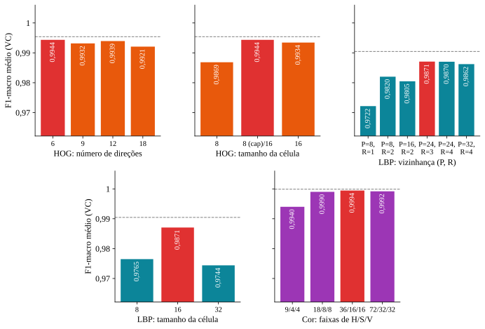
Um fator por vez; nota = F1-macro médio da validação cruzada (5 dobras, 1200 imagens de treino) nos 9 pares vetor × classificador. Um valor só substitui o de referência se ganhar por mais de 1 erro padrão. HOG: 9 → 6 direções (0,993 → 0,994, com vetor um terço menor: a melhor nota e o vetor mais simples, a menos de 1 erro padrão de 9); células mantidas · LBP: (24, 3) confirmado (era (8, 1) antes da primeira busca) · cor: (36, 16, 16) confirmado (era (18, 8, 8)). A validação do Kaggle só é usada depois, uma vez
Resultado · validação do Kaggle (300 imagens)
A matriz comparativa: vetor × classificador
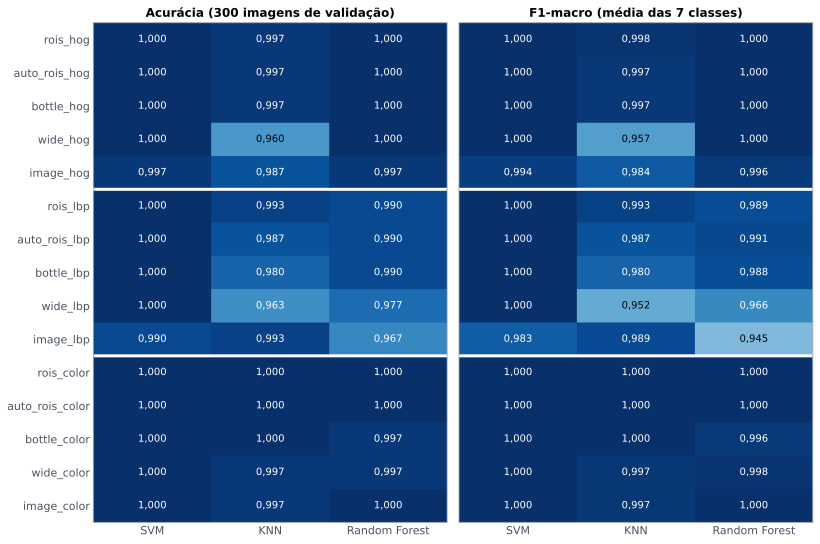
Leitura: rois_hog no SVM = 1,000 · no KNN = 0,997 · no Random Forest = 1,000 (0, 1 e 0 erros em 300). O SVM acerta as 300 imagens em 13 dos 15 vetores; só erra na imagem inteira (HOG 0,997, LBP 0,990). Com 0 erros nos três classificadores: rois_color e auto_rois_color. Menores: KNN com o HOG da área ampla (0,960) e Random Forest com o LBP da imagem inteira (0,967)
Resultado · ROIs ad hoc × regiões automáticas × garrafa inteira × área ampla × imagem inteira
Com a garrafa localizada, os recortes empatam; sem localização, HOG e LBP caem
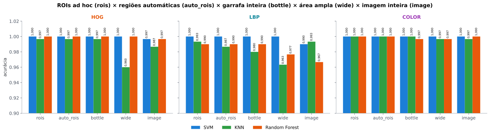
Com o SVM, os três escopos com a garrafa localizada empatam em 1,000 nos três descritores. Entre as regiões automáticas e as ROIs ad hoc há 8 empates e 1 par em que as automáticas perdem (LBP + KNN), por 0,7 ponto percentual (2 imagens). A garrafa inteira fica até 1,3 ponto abaixo com o KNN (LBP). Sem localização: a área ampla mantém o SVM em 1,000, mas o KNN cai para 0,960 (HOG) e 0,963 (LBP); na imagem inteira até o SVM erra (HOG 0,997, LBP 0,990) e o Random Forest com LBP cai para 0,967. A cor fica entre 0,997 e 1,000 em todos
Resultado · as 7 classes
F1 de cada classe, por vetor
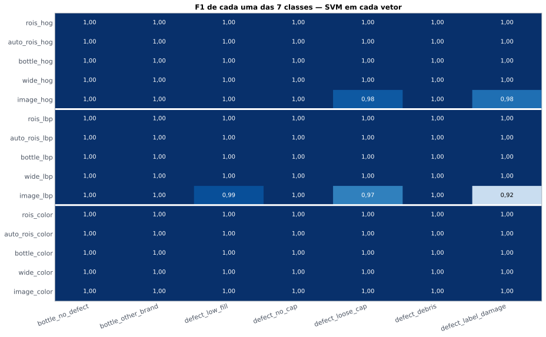
Com o SVM, as 7 classes ficam com F1 = 1,00 em 13 dos 15 vetores. Só na imagem inteira o SVM erra: defect_label_damage cai para 0,98 (HOG) e 0,92 (LBP), confundido com defect_loose_cap e defect_low_fill
Resultado · matrizes de confusão · HOG · ROIs ad hoc
Onde cada classificador erra: rois_hog
Erros (classe real → classe prevista): SVM: nenhum erro · KNN: bottle_no_defect → defect_low_fill (1) · Random Forest: nenhum erro
Resultado · matrizes de confusão · HOG · regiões automáticas
Onde cada classificador erra: auto_rois_hog
Erros (classe real → classe prevista): SVM: nenhum erro · KNN: defect_no_cap → bottle_no_defect (1) · Random Forest: nenhum erro
Resultado · matrizes de confusão · HOG · garrafa inteira
Onde cada classificador erra: bottle_hog
Erros (classe real → classe prevista): SVM: nenhum erro · KNN: defect_no_cap → bottle_no_defect (1) · Random Forest: nenhum erro
Resultado · matrizes de confusão · HOG · área ampla
Onde cada classificador erra: wide_hog
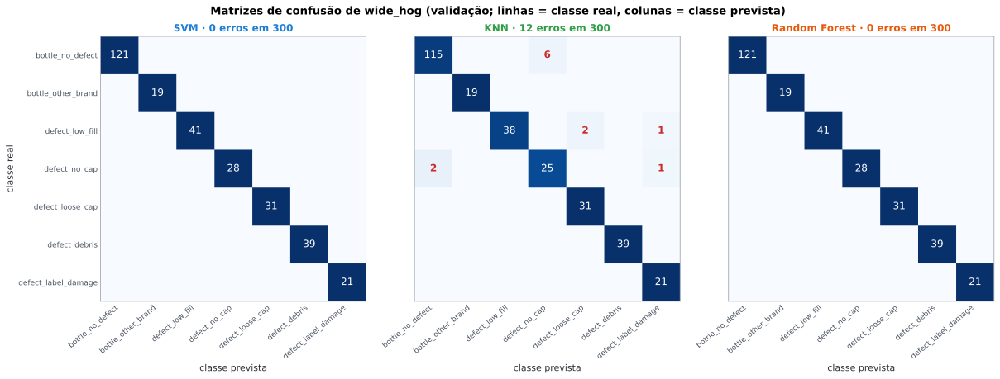
Erros (classe real → classe prevista): SVM: nenhum erro · KNN: bottle_no_defect → defect_no_cap (6); defect_low_fill → defect_loose_cap (2); defect_low_fill → defect_label_damage (1); defect_no_cap → bottle_no_defect (2); defect_no_cap → defect_label_damage (1) · Random Forest: nenhum erro
Resultado · matrizes de confusão · HOG · imagem inteira
Onde cada classificador erra: image_hog
Erros (classe real → classe prevista): SVM: defect_label_damage → defect_loose_cap (1) · KNN: defect_low_fill → defect_loose_cap (2); defect_no_cap → defect_loose_cap (1); defect_debris → defect_low_fill (1) · Random Forest: defect_low_fill → defect_loose_cap (1)
Resultado · matrizes de confusão · LBP · ROIs ad hoc
Onde cada classificador erra: rois_lbp
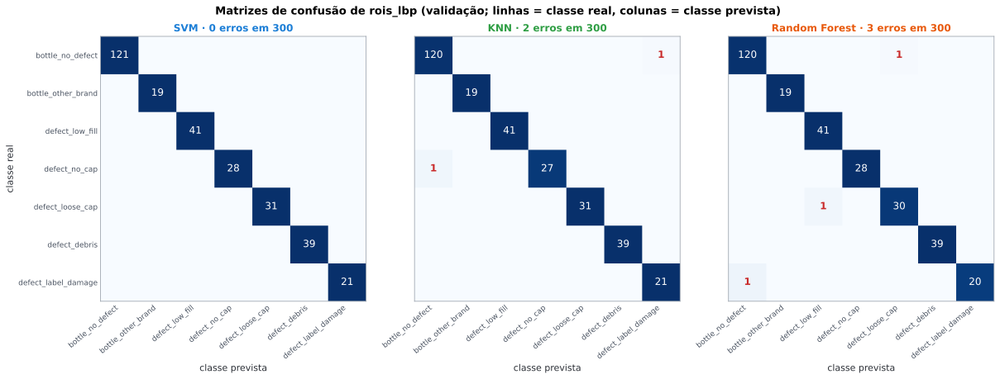
Erros (classe real → classe prevista): SVM: nenhum erro · KNN: bottle_no_defect → defect_label_damage (1); defect_no_cap → bottle_no_defect (1) · Random Forest: bottle_no_defect → defect_loose_cap (1); defect_loose_cap → defect_low_fill (1); defect_label_damage → bottle_no_defect (1)
Resultado · matrizes de confusão · LBP · regiões automáticas
Onde cada classificador erra: auto_rois_lbp
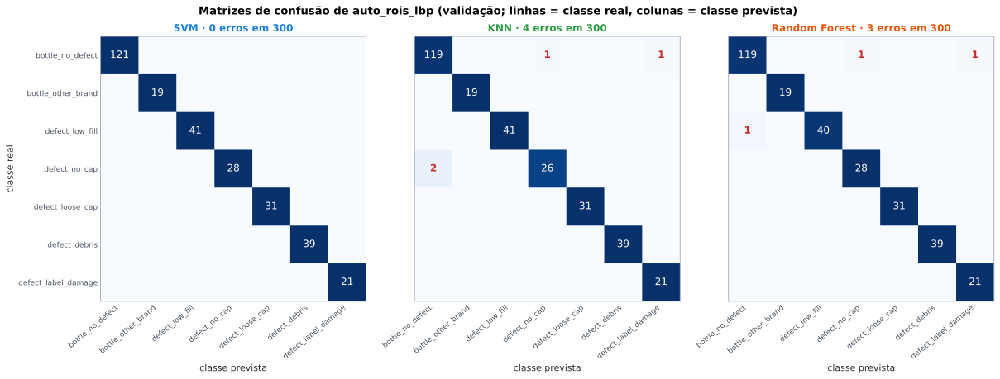
Erros (classe real → classe prevista): SVM: nenhum erro · KNN: bottle_no_defect → defect_no_cap (1); bottle_no_defect → defect_label_damage (1); defect_no_cap → bottle_no_defect (2) · Random Forest: bottle_no_defect → defect_no_cap (1); bottle_no_defect → defect_label_damage (1); defect_low_fill → bottle_no_defect (1)
Resultado · matrizes de confusão · LBP · garrafa inteira
Onde cada classificador erra: bottle_lbp
Erros (classe real → classe prevista): SVM: nenhum erro · KNN: bottle_no_defect → defect_no_cap (2); bottle_no_defect → defect_label_damage (1); defect_no_cap → bottle_no_defect (3) · Random Forest: bottle_no_defect → defect_label_damage (2); defect_label_damage → bottle_no_defect (1)
Resultado · matrizes de confusão · LBP · área ampla
Onde cada classificador erra: wide_lbp
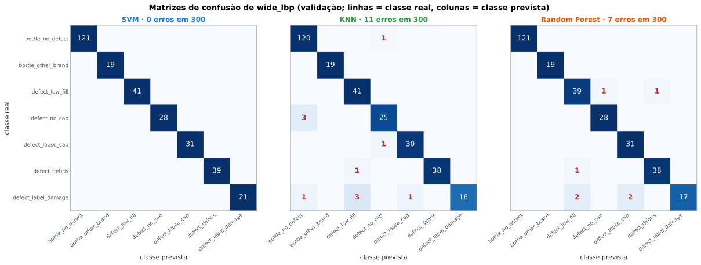
Erros (classe real → classe prevista): SVM: nenhum erro · KNN: bottle_no_defect → defect_no_cap (1); defect_no_cap → bottle_no_defect (3); defect_loose_cap → defect_no_cap (1); defect_debris → defect_low_fill (1); defect_label_damage → bottle_no_defect (1); defect_label_damage → defect_low_fill (3); defect_label_damage → defect_loose_cap (1) · Random Forest: defect_low_fill → defect_no_cap (1); defect_low_fill → defect_debris (1); defect_debris → defect_low_fill (1); defect_label_damage → defect_low_fill (2); defect_label_damage → defect_loose_cap (2)
Resultado · matrizes de confusão · LBP · imagem inteira
Onde cada classificador erra: image_lbp
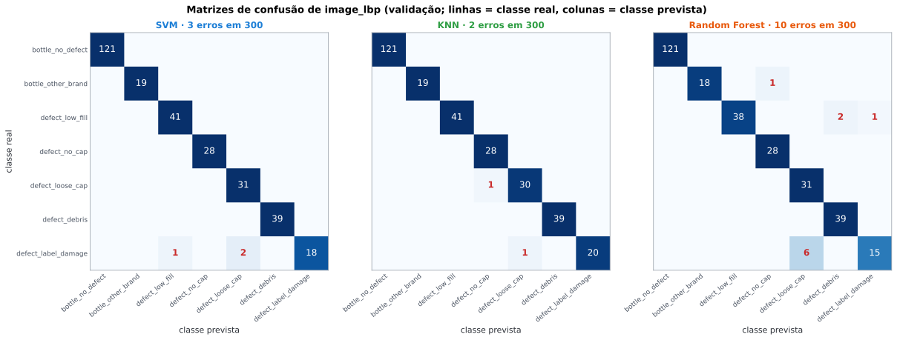
Erros (classe real → classe prevista): SVM: defect_label_damage → defect_low_fill (1); defect_label_damage → defect_loose_cap (2) · KNN: defect_loose_cap → defect_no_cap (1); defect_label_damage → defect_loose_cap (1) · Random Forest: bottle_other_brand → defect_no_cap (1); defect_low_fill → defect_debris (2); defect_low_fill → defect_label_damage (1); defect_label_damage → defect_loose_cap (6)
Resultado · matrizes de confusão · cor HSV · ROIs ad hoc
Onde cada classificador erra: rois_color
Erros (classe real → classe prevista): SVM: nenhum erro · KNN: nenhum erro · Random Forest: nenhum erro
Resultado · matrizes de confusão · cor HSV · regiões automáticas
Onde cada classificador erra: auto_rois_color
Erros (classe real → classe prevista): SVM: nenhum erro · KNN: nenhum erro · Random Forest: nenhum erro
Resultado · matrizes de confusão · cor HSV · garrafa inteira
Onde cada classificador erra: bottle_color
Erros (classe real → classe prevista): SVM: nenhum erro · KNN: nenhum erro · Random Forest: defect_label_damage → bottle_no_defect (1)
Resultado · matrizes de confusão · cor HSV · área ampla
Onde cada classificador erra: wide_color
Erros (classe real → classe prevista): SVM: nenhum erro · KNN: bottle_no_defect → defect_loose_cap (1) · Random Forest: bottle_no_defect → defect_low_fill (1)
Resultado · matrizes de confusão · cor HSV · imagem inteira
Onde cada classificador erra: image_color
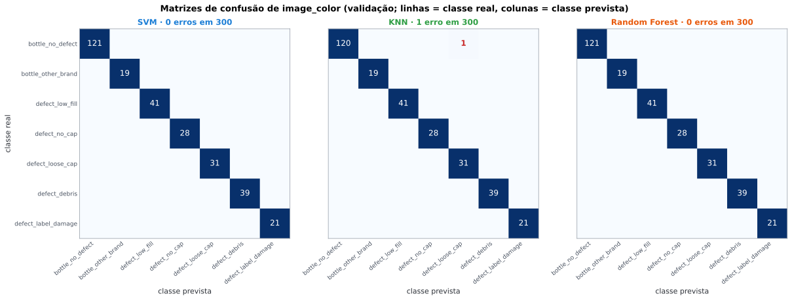
Erros (classe real → classe prevista): SVM: nenhum erro · KNN: bottle_no_defect → defect_loose_cap (1) · Random Forest: nenhum erro
Resultado · custo
Quantas garrafas por segundo cada vetor processa
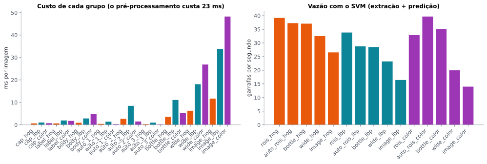
O pré-processamento custa ~21 ms por imagem; cada grupo soma de 0,2 a 11 ms com a garrafa localizada, mas a área ampla e a imagem inteira custam até 27 e 48 ms (a cor é calculada na resolução original). Com localização, os pares processam entre 29 e 40 garrafas/s; sem localização, de 14 a 34. Tamanho do vetor: cor 74–222 · HOG 1728–9720 · LBP 1872–11648
Resumo dos resultados
O que os 45 modelos mostram
| HOG | LBP | cor HSV | |
|---|---|---|---|
| acurácia: ROIs ad hoc (SVM · KNN · RF) | 1,000 · 0,997 · 1,000 | 1,000 · 0,993 · 0,990 | 1,000 · 1,000 · 1,000 |
| acurácia: regiões automáticas | 1,000 · 0,997 · 1,000 | 1,000 · 0,987 · 0,990 | 1,000 · 1,000 · 1,000 |
| acurácia: garrafa inteira | 1,000 · 0,997 · 1,000 | 1,000 · 0,980 · 0,990 | 1,000 · 1,000 · 0,997 |
| acurácia: área ampla (sem localização) | 1,000 · 0,960 · 1,000 | 1,000 · 0,963 · 0,977 | 1,000 · 0,997 · 0,997 |
| acurácia: imagem inteira (sem localização) | 0,997 · 0,987 · 0,997 | 0,990 · 0,993 · 0,967 | 1,000 · 0,997 · 1,000 |
| tamanho (ROIs ad hoc) | 1728 | 1872 | 222 |
Detecção: a subtração do fundo acha a garrafa e mede a sua altura; com a largura da caixa fixa, a sobreposição com as anotações chega a 0,94. Regiões: as automáticas e as ROIs escolhidas à mão ficam empatadas ou a menos de 1 ponto; sem localização (área ampla, imagem inteira) o HOG e o LBP perdem até 4 pontos no KNN e no Random Forest. Descritores: com o SVM, HOG, LBP e cor acertam todas as imagens; com KNN e Random Forest o LBP é o que mais cai, e a cor chega ao mesmo nível com o menor vetor
Foto 720×1280×3 → 15 vetores → 45 modelos
Fundo · luz · Otsu · caixa da garrafa · ROIs ad hoc | regiões automáticas | garrafa inteira | área ampla | imagem inteira · HOG | LBP | cor
Onde está cada etapa no código
preprocessing.py — passos 2 a 7 (fundo, luz, máscara, caixa, recortes)regions.py — regiões automáticasfeatures.py — passo 8 (HOG, LBP, cor)config.py + pipeline.py — FEATURE_VECTORS, 45 treinos; resultados em results/